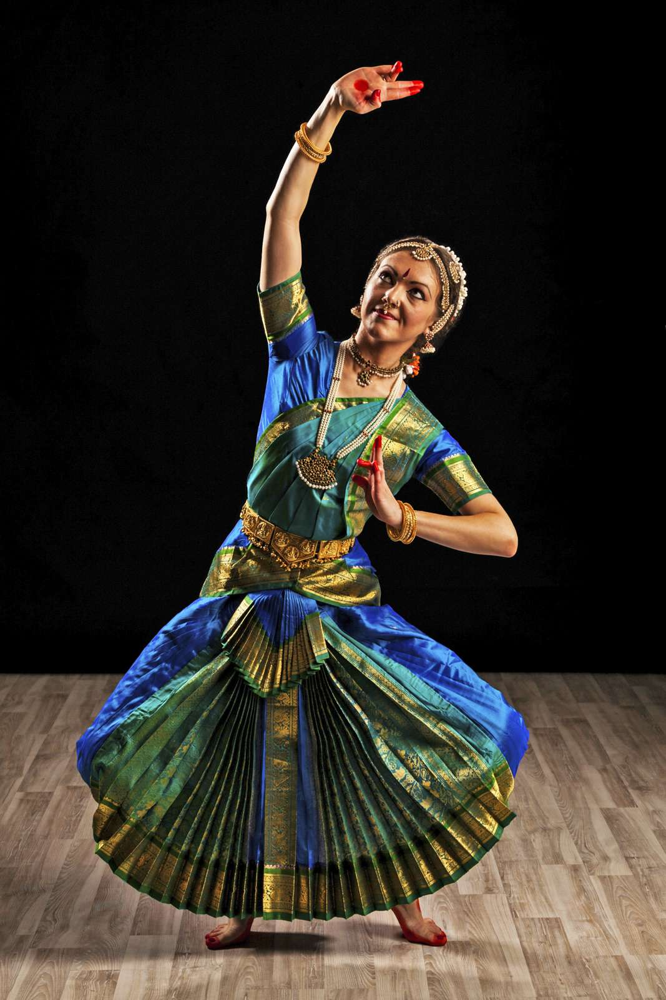
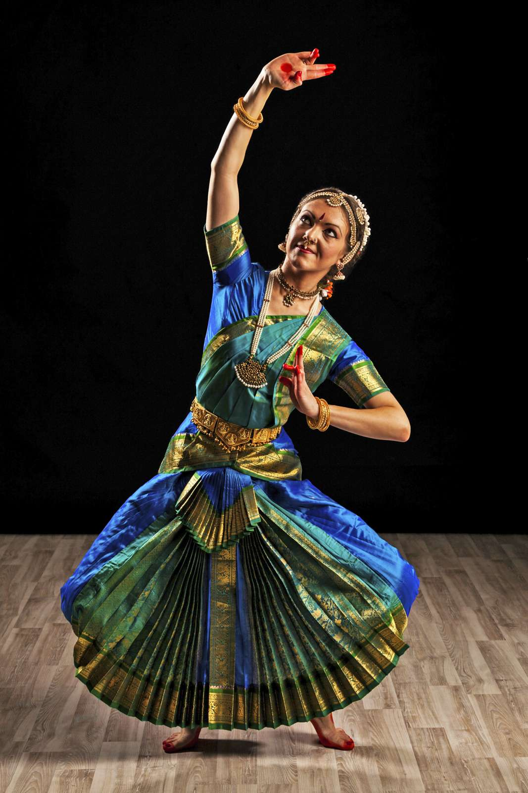

Dance is my favourite hobby and I enjoy dancing a lot. I started dancing when I was five years old and when I got older; my parents enrolled me in dance classes to pursue this passion.I cannot go a day without dance, that’s how much I love dancing. I tried many dance forms but discovered that I am most comfortable in Indian classical dance. Thus, I am learning Kathak from my dance teacher.
 

I aspire to become a renowned Kathak dancer so that I can represent this classical dance internationally. Dancing makes me feel happy and relaxed, thus I love to dance. I always participate in dance competitions at my school and have even won a few. Dance became my passion from an early age. Listening to the beats of a dance number, I started to tap my feet and my parents recognized my talent for dance. Even when I am sad, I put on music to dance to vent out my feelings.Thus, dance has been very therapeutic for me as well. In other words, it is not only an escape from the world but also a therapy for me.
Dance is also called the hidden language of the soul as we use it to express ourselves when words fall short. The joy which comes with dancing helps us get over our sorrow and adversity sometimes. Moreover, it is simply a translator for our hearts. What is most important to remember is that dance is not supposed to be perfect. There is no right way of dancing, as long as your heart is happy, you can dance. When we talk about dance, usually a professional dancer comes to our mind. But, this is where we go wrong. Dance is for anybody and everybody from a ballet dancer to the uncle dancing at a wedding. It is what unites us and helps us come together to celebrate joy and express our feelings. Therefore, we must all dance without worrying if we are doing it right or not. It is essential to understand that when you let go of yourself in dance, you truly enjoy it only then.